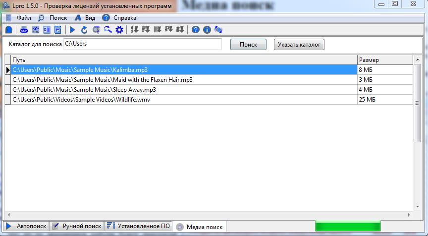

Медиа поиск
Медиа поиск позволяет найти аудио и видео файлы в указанном каталоге. Он также отображает размер файла.
Файлы меньше мегабайта не рассматриваются.
Для того, чтобы воспользоваться функцией медиа поиска необходимо
открыть вкладку "Медиа поиск".
